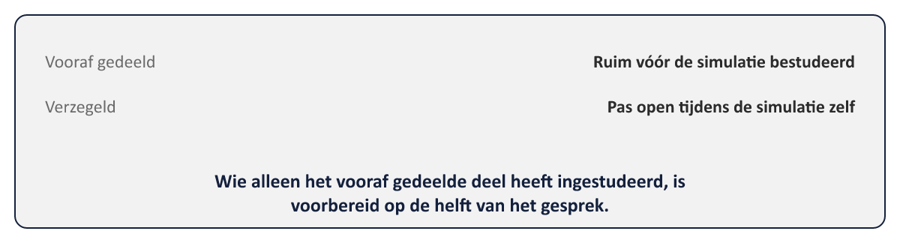

Het sluitstuk van de hele cursus
⏱ 3 minDit is het laatste deel van niveau 3, en daarmee van de hele cursus. Alles wat sinds deel 1 is opgebouwd — de zeven bevindingen uit de WGP 2.0-postmortem, de PRINCE2-principes en -practices, MSP’s themes en tranches, IPMA’s oplopende competentieniveaus, en de niveau 3-vaardigheden rond toezicht, onomkeerbaarheid, verdedigbaar stoppen en ethiek onder druk — komt hier samen in één simulatie.
Waar de capstones in niveau 1 (deel 10) en niveau 2 (deel 22) een verdediging waren — één groep die een document presenteert aan een bevragende stuurgroep of sponsoring group — is de masterproef in dit deel iets anders: een boardsimulatie waarin vier deelnemers gelijktijdig, elk vanuit hun eigen rol, een acute crisis moeten doorleven. Niemand “verdedigt” hier alleen; alle vier de rollen dragen samen de verantwoordelijkheid voor wat er in de zaal gebeurt.
Dagdeel A bereidt de masterproef inhoudelijk voor: de casus wordt geïntroduceerd, de vier rollen worden toegewezen en ingestudeerd, en elke deelnemer bouwt zijn eigen inbreng op. Dagdeel B is de simulatie zelf, gevolgd door de slotreflectie die de hele cursus afsluit.
